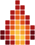

Kahu Ahi: one fire record across MODIS and VIIRS
Kahu Ahi is Hawaiian for 'keeper of the fire': kahu, keeper or guardian; ahi, fire.
The record shown is MODIS Aqua. VIIRS, converted to its scale and tested, runs beside it and is what continues the record when Aqua stops.
Where and when satellites saw fire
Automatic: NASA Blue Marble, then Esri satellite imagery from zoom 9.
Legend
Harmonization result
What you are looking at
Loading the map.
Places with the most detections in this view
How to read this
- A detection is one satellite pixel where the satellite saw heat from a fire at the moment it passed over. A pixel is about 1 km across for the older MODIS instrument and 375 m for the newer VIIRS.
- A detection is not a count of fires and not burned area. One large fire gives many detections; a small or short fire may give none.
- No detection is not "no fire". Clouds, smoke and the time of day the satellite passes all hide fires.
- Why two satellites disagree: VIIRS (flying since 2012) has smaller pixels than MODIS (since 2000), so it records several times more detections of the same fires.
- MODIS Aqua scale means counts as the MODIS instrument on the Aqua satellite records them. VIIRS counts are divided by a factor measured in each region, for each calendar month, so the new record can be compared with the old one.
- Counted detections are those the satellite marked as a likely vegetation fire with normal or high confidence. Volcanoes, gas flares and other steady heat sources are left out.
- Provisional means near-real-time data: it arrives within hours, has not yet been reprocessed by NASA, and can still change.
- This is a history of what satellites saw. It is not an alert or a forecast.
Detections
Local time and UTC are the time of the satellite pass. Radiative power is the fire radiative power FIRMS reports for the pixel, in megawatts.
When: the time is when the satellite passed over and saw the heat, not when the fire started. Each satellite passes about twice a day, so a fire can burn for hours unseen. Dates on this page are UTC dates, so a local evening or early morning can fall on the neighbouring date.
Where: the position is the centre of the satellite pixel: about 375 m across for VIIRS and about 1 km for MODIS, larger at the edge of the swath. The fire is somewhere inside it, not exactly at the point.
Fire activity over time
This opens on the days of one month. Select a bar to go down a level; use the trail above the chart to go up to the month, the year or all years. The map, the timeline and the calendar follow.
The full record, month by month
How to read it: each row is a year and each box is a month. The number in a box is that month's fire detections on the MODIS Aqua scale; a brighter box means more. Select a box to see that month on the map, or a year to see the whole year.
Select a month to see what each satellite recorded.
This month so far
When it usually burns
Choose an area
Draw a rectangle on the map, or type its edges in decimal degrees (longitudes west of Greenwich are negative, as in California and Hawaiʻi; in the Vietnam region all four edges are positive). The area is widened to whole 0.1° cells and kept inside the region box. The calendar, the comparisons and the download then cover only that area.
How far to trust the harmonized numbers
Compare regions
Download the hotspots
Every detection inside the region, from all four satellites, with the flag that says whether it was counted above.
The monthly table
One row per month, as in the calendar: the value, its status, each satellite's count, the VIIRS values on the Aqua scale, and the conversion's tested error for that period.
Method, limits and sources
Method in one paragraph: every detection comes from NASA FIRMS. For each region, the months when MODIS Aqua and VIIRS Suomi NPP both observed (2012 to 2026) give a factor for each calendar month: VIIRS detections divided by Aqua detections. Dividing a VIIRS count by that factor puts it on the MODIS Aqua scale. Each year is then predicted from factors built without it, and the error is reported above. Where that error is too large, the region is not converted.
No detection is not the same as no fire. Clouds, smoke, short-lived fires and the time of the satellite pass all hide burning, and this tool has no record of when a place could not be observed.
This is a history of satellite detections. It is not an alert, a forecast or a count of fires, and it does not replace official emergency information.
Only the regions listed here are supported. Each region is checked on its own data before its VIIRS numbers are converted; where the check fails, they are not converted. An area you choose inside a region uses that region's conversion, which was never tested on the smaller area.
A blank map cell means no detection was recorded there, not that nothing burned or that the place is safe.
Full method, validation numbers, sources and the use of AI: README, SOURCES, third-party notices, AI use.